Basic kayaking Course
Learn Kayaking in just 4 Days - For Absolute Beginners
Available Batches
Description


Brief Itinerary
Detailed Itinerary
Day 1
An Intro to Basic Skills
Duration: 5 hours (9 AM to 2 PM)
The course starts today! The drive from Dehradun – the closest airport – to Rishikesh is short but pleasant. For the first 20 minutes, the roads take you through the cityscape of Dehradun. As soon as you cross the highway and enter the hills, the roads gain elevation and bring you into the forests filled with pristine pine trees. About another 30 minutes into the journey, the hill roads widen and land in Rishikesh. The drive should take up to two hours at max. We advise you to please book your hotel near tapovan area on the Badrinath highway, so that you can easily walk upto the pickup spot. We provide pickup from only one spot. In case you have any doubt please discuss with our team before booking your hotel.
If you are reaching Rishikesh on the same day please plan in such a way to reach your hotel by 8:30 AM. Once you settle down and freshen up, you can meet the rest of your course mates at the pickup spot. Your kayaking instructor will pick you up at 9 AM and take you to Neem Beach, a sand settlement on the shores of Ganga. After a 10 minute ride to Neem Beach, we offload our kayaks and walk towards the assembly point. This is followed by a proper briefing session. We kick start this adventure with some essential theory - our introduction to the world of kayaks and kayaking! This session is extremely important for it will lay down the foundation for what we learn over the next couple of days – pay close attention and take notes if you need to! We also get a demonstration, so we know what to do with our kayaks and ourselves in and outside the water.
Now, let's break down the topics for the day. The first lesson, to begin with, is knowing your kayak. Knowing your kayak means understanding the different parts of a kayak and its functions. Just like learning the functions of your own body, learning about a kayak's parts will help you learn faster and perform better. The second essential skill the instructors teach is how to attire for white-water kayaking. It involves wearing a wet suit, splash jacket, helmet, footwear, and a spray deck. Never forget your floatation device (Life Jacket – it’s called this for a reason!); it is the main part that will keep you afloat on water. This is followed by a series of "how to" methods:
- How to sit inside a kayak
- How to launch your kayak on the water
- How to paddle
- How to get out of a kayak on shore
- How to drain water from a kayak
The above steps are the DNA of kayaking – the very basic elements that the sport is made of. Initially, beginners tumble, slip or even fall. It's okay; maximum fun and faster learning come from falling and getting back up on the waters. Kayaking is an intuitive sport. The instructors make you practice the steps for four hours until the basics become a part of your muscle memory. Imagine riding a bike or a cycle; your body naturally handles the mechanism with practice. Likewise, your body will be automatically tuned to paddle in any condition with enough practice. The friendly instructors of the kayaking course are hand-picked professionals trained to teach you in the best way possible. So, all you have to do is focus on having fun and leave the rest to the instructors.
After basic practice, the other interesting topics we learn are balancing a kayak, wet exit, safety protocol, and rolling in the water. Once you sit inside a kayak, it becomes the extension of your body. When the lower part of your body is wholly set inside the kayak, it enables you to control the entire boat. As soon as you glide into the water, the instructors make you rock the boat by shaking your hips. You know that it is perfectly balanced if it swings in tandem with your movement. Rolling a kayak is learning to flip the boat and going underwater. This might sound daunting, but the feeling of being underwater is one of the most exciting experiences of the course. Feeling the fresh water flow brush through your skin is refreshing and revitalizing to say the least. The rolling is done to practice wet exits. A wet exit is a technique done to release yourself underwater and then resurface. The final lesson for the day is in regards to safety protocols which are as follows:
- Always take the 5 primary gears – Helmet, life jacket, spray deck, kayak, and paddle
- Don't compromise on comfort
- Never panic underwater – there are ways you can control your fear
- Go kayaking under a professional supervision
- Follow the line or follow the rule (Rule – never stop paddling)
- Keep yourself hydrated
- Never ignore the itinerary
These points are not just for the course. If you plan to go kayaking again in the future or take it as a hobby, remembering and following the protocols will keep you safe in any form of natural water.
Finally, after all the practice and theory sessions, we end the day on a high note with an 8 km river run from Neem Beach to JankiSetu bridge, crossing a class 1 rapid called Hill-Turn.
Now, in case you were wondering what a rapid is - itis a section on the river where the main stream flows with extreme force creating mixed currents and wild waves. According to their intensity, they are classified from class 1 to 5 and above. The river run refers to cruising for long distances on white-water rivers.
Imagine going solo on a mix of glacial streams and traveling under the iconic bridges LakshmanJhula, Ram Jhula, and JankiSetu. It is a ride to remember. Don't worry; class 1 rapids are easy to handle. The instructors paddle close to you and guide you throughout this journey. You start with a quick revision of paddling strokes, balancing a kayak, and slowly entering the river's mainstream. The waters are calm and tranquil for the first 2 km. Observe the wild trees and boulders dipping their feet on the river's shores. At the end of 2 km, you see and hear the waves roaring from a distance. That's the rapid we spoke of earlier and this one’s called Hill-Turn. You notice the grand turning point of the stream near a small quaint hill. The wild waves lift and rock your kayak. It might be scary for beginners. Just keep your lower body tight and never stop paddling. The force from the kayak will pierce through the waves to help you move ahead. While paddling, you can recollect techniques you have learned in the past 4 hours, like how to balance, how to paddle, the purpose of the wet suit, etc.
After crossing the Hill-Turn rapid, you enter the region under the iconic bridges LakshmanJhula, Ram Jhula, and JakniSetu. Look up and wave your hands to the tourists cheering from the bridge. The flow of water gets softer and slower near JankiSetu. We stop at an exit point here, get out of the water, and travel back to our hotels around 2 PM.
Day 2
Introduction to the White Waters
Duration: 9 AM to 2 PM
Today is less theory and more practice. The objective is to practice the techniques taught the previous day- again and again until we get a hang of it. We will continue our lessons on the Class 1 Rapids today. The objective is not speed but to get a sense of how the Kayak responds to your movement in the water- how to balance, how to paddle, leaning techniques, t rescues and ferry glides
Do not be discouraged if you don’t pick up on a particular technique right away. As the saying goes, every sport takes a day to learn and a lifetime to master.
By the end of the day, we will also introduce you to the basics of Eskimo Turns which is what your intermediate kayaking course delves into.
Once you are done for the day, ensure you get ample rest for tomorrow, we have something exciting and demanding waiting for us- Stepping into the Class 2 Rapids of the Ganges.
Day 3
Getting into Class 2 Rapids
Duration: 9 AM – 2 PM
Today is the day we step up and progress to Class 2 white-water rapids. This means stronger currents, bigger waves, heavy splashes, and more fun. The rapids from class 2 and above define the true freedom of white-water kayaking. It is called so because of the pearl white splashes the water produces when the currents and waves crash. The names of the rapids are Initiation (Class 2) and Double Trouble (Class 2).
Class 2 rapids are sections of the river with wider space, fast currents, minimal rocks, and moderate waves. They fall under the easy to medium category ideal for beginners to practice and gain experience. The waves are easy to read, and a kayaker can comfortably maintain a line.
The instructors pick us up at 9 AM and take us to Brahmapuri, 8 km away from Neem Beach. The day starts with us revisiting all the fundamentals of wearing the attire, entry & exit techniques, paddling strokes, and safety protocols. We practice everything from scratch for the first two hours and then learn new techniques.
On the first day of the course, we learned how to paddle with the flow of water. Today, we learn how to paddle upstream against the flow of water. The paddling techniques are the same for this, but the frequency of the hand motion has to be faster and continuous until we reach the calm section. The exciting part is learning some advanced techniques like T rescue, ferrying, and river features. T rescue is a unique method where a different kayak approaches you when you flip over. You are trained to stretch your hands underwater, reach another kayak's front side, and snap your lower body to resurface. This process is confusing in the beginning. But, after practicing a few times, the fear of water tends to vanish helping you resurface like a pro. Ferrying is crossing a stream from one side to the other by using water flow; pro kayakers use it to enter and exit a rapid.
Theory session of the day introduces you to river features like rocks, waves, and currents. It is an extremely essential skill since it helps kayakers read the river by observing the river features before planning a route map for the river run. Once we get familiar with the features, we can quickly identify the route and maintain our line.
After practicing for 4 hours, we warm up our bodies with a few strokes near the shore and follow the instructors into the rapid. The size of the waves and the force of currents can be overwhelming in the beginning. Don't panic, and don't lose your focus. The techniques are the same as yesterday. Just maintain your line and balance, like your experience in class 1 rapids. Enjoy the sheer force of the water and feel the raw adrenaline rush. Even if we roll over, we can wet exit and body surf with the help of a life jacket. Keep calm and keep paddling and let the force take care of the rest. After an exciting initiation, the waters slow down, and the river trail gets wider. Relax and feel the breeze. Around 4 km into the river, we get into the surprising turf of Double Trouble. Just like the name, it has two sections of rapids. As soon as we cross the first one, a second one will quickly sneak up and surprise us with its big waves. Just paddle and enter the calm zone, which takes you to the shores of Neem Beach.
Day 4
River Run through 4 Rapids
Duration: 5 hours(9 AM to 2 PM)
The fourth day is the most exciting and adventurous day of the course. Today, we go deeper into the stream starting from PhoolChatti, 4 km away from Brahmapuri. Here's an interesting fact - the origin of water sports in Rishikesh started from PhoolChatti. Locals say that around 50 years back, renowned river guides from abroad and India came to PhoolChatti to explore the waters of the Ganga. The point where it all began - could there be a more exciting place than this on your last day of the course – almost like going the full circle!
Today we meet two more massive class-2 rapids. This is where the skills we learned in the last two days are truly tested as we cross not one, not two, but FOUR fun rapids over 12 whooping kilometers.
Names of today's rapid:
Rapid 1 – Club hose (Class 2)
Rapid 2 – Cash flow (Class 2)
Rapid 3 – Initiation (Class 2)
Rapid 4 – Double Trouble (Class 2)
For the first two hours, we practice strokes, techniques, and rescue methods near the shores of PhoolChatti. The instructor gives one last demo on how to get into a rapid, paddling & turning techniques, snapping, and more. Splash as much of the cold water as you can on your face. The refreshing water helps rejuvenate your senses and resets your mind. Be attentive and check your gears. A golden tip is following the line or following the rule. Following the line means following the instructor. If you lose balance and cannot follow the line, keep paddling through the waves, that's the rule. Clubhouse and Cash Flow are the short and wild rapid sections that present you with utmost thrill and adventure. After crossing these, Initiation and Double Trouble no longer seem daunting. You will slide and glide through them with ease and grace. Finally, when we reach Neem Beach, a sense of accomplishment eagerly awaits your arrival on the shore.
Quite a power-packed 4-day course, isn't it? Kayaking is a one-of-a-kind water sport that makes you live in the moment with complete focus and experience the feeling of truly being alive. It's not an activity to strike off your checklist; it is a routine and a taste that will linger longer, making you come back to it over and over again. In the 4-day Basic Kayaking Course, you gain a strong foundation in basic techniques, usage of the gears, and the confidence to learn more. We are excited to see you start your kayaking journey on the white and wild waters of Ganga. In case of any doubts, feel free to reach us.
What's Included
- Experienced team having appropriate training and certifications for whitewater rescue and wilderness first aid.
- Local transfers for kayaking.
- Use of non shared exclusive kayaking gear ( kayak, spray deck, wet suit, neoprene booties, paddle, helmet, PFD ).
- Instructions, river guides for safety/rescue support, all necessary rescue equipment.
- River permits, Forest/National parks entry fees/permits, inner line permits, all necessary legal paperwork & documentation.
- Comprehensive first aid kit.
What's Not Included
- Train/Air fares up to and from the starting and ending points.
- Accommodation and meals.
- Insurance of any kind.
- Expenses of personal nature.
- Anything not mentioned explicitly in the schedule/program.
Are you Eligible for this Adventure?

BRS Level Required
This makes it mandatory for you to have experience of preferably multiple activities marked at level 4 on the BRS. You should have a basic level of comfort in the water. By knowing how to swim does increase your confidence of being in the water. If you are able to swim 25 meter laps without stopping & float on water for 2-3 minutes, consider yourself eligible for this course.
If you do not know what level of BRS trek would suit you best, worry not! Fill out this Form:

we will send you a progression chart to help you comfortably get out of your comfort zone in order to level up and ultimately reach your highest potential in the big, bad world of outdoor adventure.
Packing List
- Quick drying clothes/Swimming costume
- Waterproof floater kind of sandals with secured back strap
- Retainer strap for shades or Prescription glasses
- Sun protection cream
- Moisturiser
- Extra clothes to wear after Kayaking
- Towel
- Toilet kit
Frequently Asked Questions
If you are someone who wants to enter the world of water sports, kayaking is the best place to start because it is one of the safest water sports you can experience. The kayaks are made of sturdy waterproof materials, and the sport involves using a personal floating device, a life jacket which keeps you from drowning.
Basic level of fitness is enough to enjoy kayaking. Your body weight should be in normal BMI category. In case of chronic illness, past ailments, and any medical conditions, please consult a doctor first.
You should have a basic level of comfort in the water. Knowing how to swim increases your confidence of being in the water. If you are able to swim 25 meter laps without stopping & float on water for 2-3 minutes, consider yourself eligible for this course.
The minimum age limit is 18 years.
Anything below 85-90 kgs is what a normal kayak can support.
We offer kayaking courses in Rishikesh in the currents of Ganga which provide for all levels of rapids perfect for a beginner to get a taste for the sport.
Our batch sizes are capped at 10 with the outdoor leader to participant ratio at 1:2.
Starting anything new can be scary, but fret not, kayaking is heaps of fun and with experts and safety measures all laid out, it is also very safe.
The course is meticulously planned to equip you with the basic techniques of kayaking and provide you with a strong foundation to take up the sport more seriously. At the end of the course, you will be equipped and trained enough to cross a class 2 rapid in style. The key benefits of this course are that you will get well-versed with the fundamentals of the sport, have some electrifying experience on rapids and lose the fear of water.
The training runs for 5-6 hours each day.
In summers March to May are the best months whereas the best months before winters are September and October before the water gets really cold.
During summers, the waters are pleasant and bearable. Plus, the wet suit we wear during kayaking is specially designed to keep you warm.
All the essentials required for kayaking will be provided to you as part of the course. You don’t need to bring anything except swimming/ sports briefs to wear inside your wet suit.
We hold the course in the waters of Ganga in Rishikesh. The closest airports to Rishikesh are Dehradun and Delhi. You can hire cabs or get state buses which run frequently between these cities. Dehradun is close to 90 minutes from Rishikesh and Delhi is around 5-6 hours away. You can alternatively take a train to Haridwar and get a local cab from there to Rishikesh. There is also a railway station in Rishikesh itself.
Yes, Rishikesh has impeccable cell reception and network connectivity.
Rishikesh is a major town and has plenty of ATMs.
Some nearby attractions you can explore in Rishikesh:
Laxman Jhula and Ram Jhula: These suspension bridges are iconic landmarks in Rishikesh. They offer stunning views of the Ganges River and the surrounding hills. You can take a walk across the bridges and explore the bustling markets nearby.
Triveni Ghat: Triveni Ghat is a sacred bathing ghat where the Ganges, Yamuna, and Saraswati rivers are believed to meet. It's a popular spot for evening aarti (a religious ceremony) and offers a serene atmosphere for meditation and spiritual activities.
Parmarth Niketan Ashram: This renowned ashram is one of the largest spiritual centers in Rishikesh. It hosts various yoga and meditation programs, spiritual discourses, and cultural events. The ashram is located on the banks of the Ganges River and provides a tranquil environment for introspection.
Beatles Ashram (Chaurasi Kutia): This abandoned ashram gained fame when The Beatles visited Rishikesh in 1968 to learn transcendental meditation. The ashram is now open to the public and offers a glimpse into the band's spiritual journey. You can explore the colorful graffiti-covered buildings and enjoy the serene surroundings.
Laxman Jhula and Ram Jhula: These suspension bridges are iconic landmarks in Rishikesh. They offer stunning views of the Ganges River and the surrounding hills. You can take a walk across the bridges and explore the bustling markets nearby.
Triveni Ghat: Triveni Ghat is a sacred bathing ghat where the Ganges, Yamuna, and Saraswati rivers are believed to meet. It's a popular spot for evening aarti (a religious ceremony) and offers a serene atmosphere for meditation and spiritual activities.
Parmarth Niketan Ashram: This renowned ashram is one of the largest spiritual centers in Rishikesh. It hosts various yoga and meditation programs, spiritual discourses, and cultural events. The ashram is located on the banks of the Ganges River and provides a tranquil environment for introspection.
Beatles Ashram (Chaurasi Kutia): This abandoned ashram gained fame when The Beatles visited Rishikesh in 1968 to learn transcendental meditation. The ashram is now open to the public and offers a glimpse into the band's spiritual journey. You can explore the colorful graffiti-covered buildings and enjoy the serene surroundings.
We do not offer accommodation as part of the course. Given that Rishikesh is a tourist-friendly city, accommodation of all kinds is easily available. We recommend you find accommodation in Tapovan since your pick-up and drop-off on each day of the training is from that area of Rishikesh.
We do not offer pick-up and drop-off services. We only provide transportation to and from the training site.
Yes, insurance for any adventure activity is highly recommended to cover for the cost of any emergency service required as well as to cover for medical cost in case of injury or illness during the course. You can buy it on your own from any third-party insurance company which provides adventure-based insurance.
Yes, there are permits required for this. We obtain the permit on behalf of each participant. The cost of the permit is included in your course fee.
Pick-up and drop-off on each day of the training will be from Tapovan. The exact location will be shared with you on the Whatsapp group closer to the date of starting the training.
Since it is a water-based adventure, we would recommend you use tampons or menstrual cups. If you are not comfortable with these, we would recommend you pick batch dates that don’t clash with your menstrual cycle.
A copy of your ID Proof (Aadhar card or any other government ID) and Medical Certificate are the mandatory documents required for this course. (Soft copies for all of these are to be sent to us & originals should be on your person while on the trek.)
Yes, you will receive e-certificates (of completion) after the course. In case you were unable to finish the course, you will get a certificate of participation.
On completion of the course, the certificate will show up on your dashboard on our website. You can download it directly from there.
We hold the training in Rishikesh, which is in India. If you are coming from outside, you will need a visa to enter the country. You should be able to find the rules for obtaining a Visa based on your home country on the internet. This information is easily available.
This does not apply to you if you are an Indian citizen. In case you don’t hold an Indian passport, you will need to check online for Visa application rules based on your home country.
If you are not an Indian citizen, you will need Travel Medical Insurance to travel to the country. Please make sure that your insurance policy is valid for the activity you are undertaking.
We offer white-water kayaking courses in Rishikesh in the currents of Ganga which provide for all levels of rapids perfect for a beginner to get a taste for the sport. Rishikesh also has established safety measures since it is a hub for water sports like kayaking making it a safe place for a beginner.
You can make the booking any time depending on availability of slots in our fixed batches. You will get this information at the top of this page.
On making the payment, you will receive a booking confirmation along with the packing list and a copy of the undertaking form via email. You will subsequently receive emails providing other details of the course. Please add [email protected] in your trusted emails list to make sure our emails don't go to your spam folder.
A Whatsapp group will be formed a few weeks before the start of the course. Members from our team are on those groups as well. Feel free to seek any clarifications you require in regards to the trek, on the group itself. Updates related to the course will be shared on the Whatsapp group as well.
A Whatsapp group will be formed a few weeks before the start of the course. Members from our team are on those groups as well. Feel free to seek any clarifications you require in regards to the trek, on the group itself. Updates related to the course will be shared on the Whatsapp group as well.
Yes, we create a Whatsapp group a few weeks before the start date so that the flow of information remains smooth and transparent.
Yes, it is one of the mandatory documents you will need to submit before the course starts. The soft copy is to be sent to us & the original should be on your person when you arrive for the course.
Yes, we will provide you an undertaking form through email which will need to be filled up by you and submitted to us post booking.
Why Bikat?
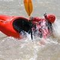
Safety
Impeccable safety record
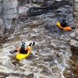
Expertise
Capability to run trips in remote and difficult regions
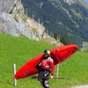
Equipment
State of the art equipment
Eco-sensitive approach
We conduct our courses in an eco friendly manner
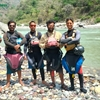
Team
Very competent, committed and cohesive team
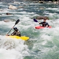
Personalized experience to guests
1:2 ratio between Instructors & Students - One instructor for two students
What our customers Say


Cancellation Policy
Cash refund
Cancellations up to 30 days prior to departure date
Cancellations between 30 days to 15 days prior to departure date
Cancellations within 15 days prior to departure date
Voucher refund
Cancellations up to 5 days prior to departure date
Cancellations within 5 days prior to departure date
Please Note:
- Cash refund is applicable only in case of bookings made without using any promotional offer code or vouchers
- This is only a brief of cancellation terms. For finer details please refer Detailed Cancellation Policy.
Blog Posts

Informative
Kayaking is an amazing way to get out of home and beat the heat. It is a unique water sport to experience fun and thrill while moving through the pristine waters of nature. The sport has something for everyone – there are various kinds of kayak...
Read full

Informative
In the world of water sports, kayaking is a mystery box filled with facts and stories. Curious beginners surf through different blogs and articles to know more about the itinerary and the techniques taught in kayaking courses. While researching this ...
Read full

Know How
Looking for ways to experience nature from the front seat? If yes, kayaking is your answer. However, before you decide to jump into the waters, the most important thing to learn is what to wear. Right clothing and right accessories ensure safety and ...
Read full
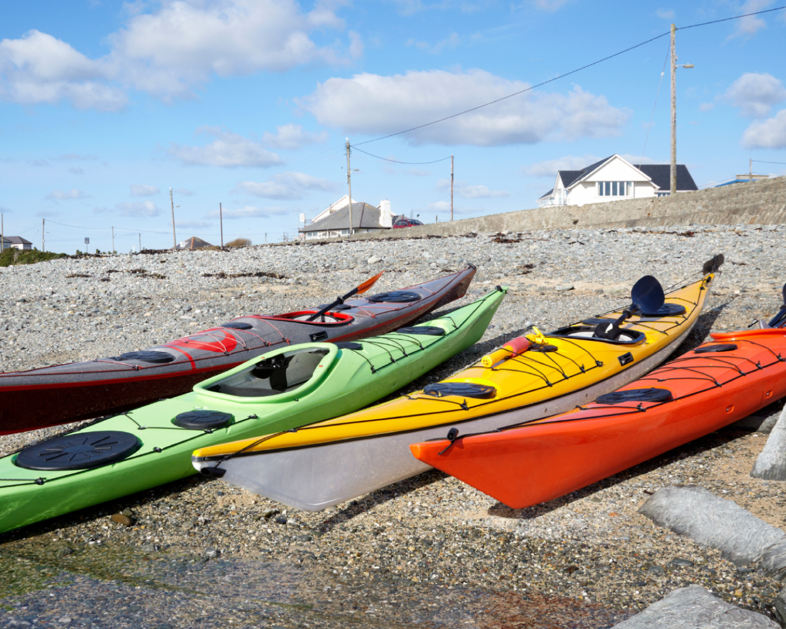
HOW TO DRAIN WATER FROM A KAYAK: A Beginners’ Guide
Know How
Rolling over is very common in the sport of kayaking. Specifically, when it comes to white water kayaking, we use sit-in-kayaks designed to keep us warm and dry. Only pro kayakers know advanced techniques like Eskimo roll, enabling them to roll back ...
Read full
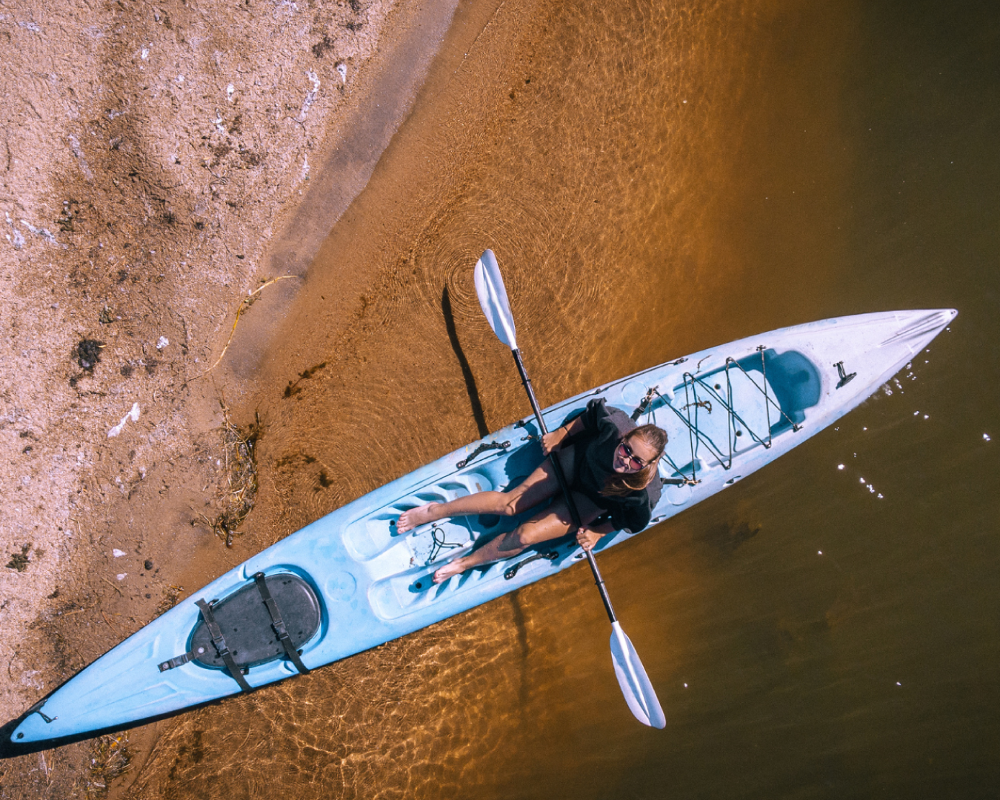
HOW TO GET OUT OF A KAYAK- A BEGINNERS’ GUIDE
Know How
Getting out of a kayak is slightly different from getting into one. Almost all beginners fall on their first attempt, which may not look graceful. But it’s okay. Even pro kayakers lose their balance and fall once in a while. Falling is fun here...
Read full
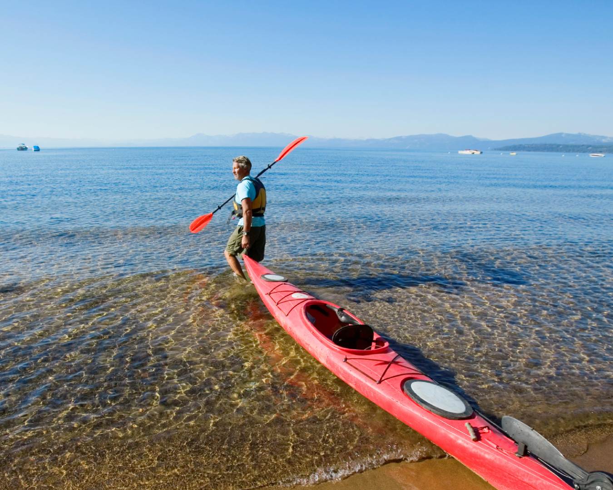
HOW TO LAUNCH A KAYAK INTO WATER: A BEGINNERS’ GUIDE
Know How
After learning how to attire and how to sit, the third step you will learn in the basic kayaking course is how to launch a kayak in water. The term ‘launching’ means, smoothly entering the kayak into the river from land. Once you get fami...
Read full

Know How
Paddling is the primary motion that lets a kayaker move freely on different kinds of water. The techniques and the strokes of paddling are the same in all forms of kayaking like white water, recreational and flat water. Mastering the art of paddling ...
Read full
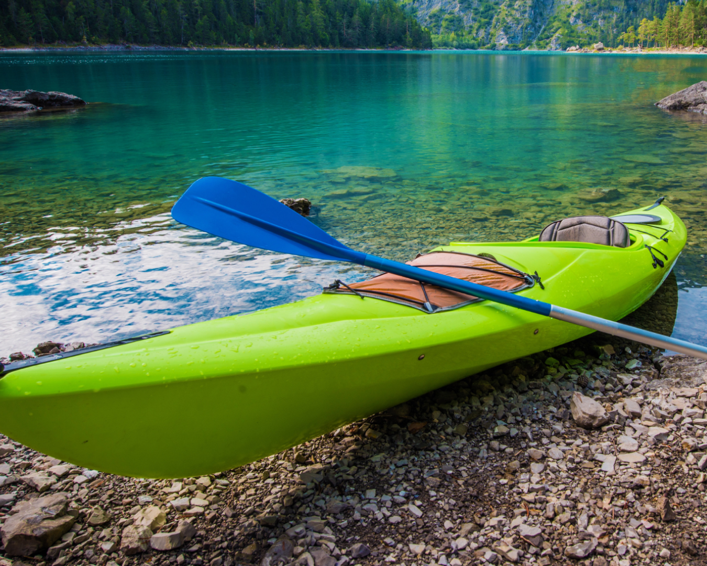
HOW TO SIT INSIDE A KAYAK: A BEGINNERS’ GUIDE
Know How
Getting inside a kayak is not a complex task. Beginners tend to tumble and fall in the beginning. But, it’s only a matter of getting proper guidance and practice. Kayaking is a sport of balancing. The sitting position maintains the center of ma...
Read full
Similar Adventures
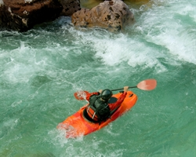
Integrated Basic Kayaking Course
Basic Kayaking Course + Eskimo Roll Workshop
Uttarakhand
7 Days
BRS 6
340 m

Basic Skiing Course - Gulmarg
Learn to Ski in 08 Days - For Absolute Beginners
Kashmir
8 Days
BRS 4
3780 m
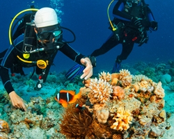
Open Water Scuba Diving Course
Your entry into the world of scuba certification, making you a certified scuba diver.
Pondicherry
4 Days
BRS 4
3 m


{kind=link}
{kind=link}
{kind=link}
{kind=link}
{kind=link}
{kind=link}
{kind=link}
{kind=link}
{kind=link}
{kind=link}
{kind=link}
{kind=link}
{kind=link}
{kind=link}
{kind=link}